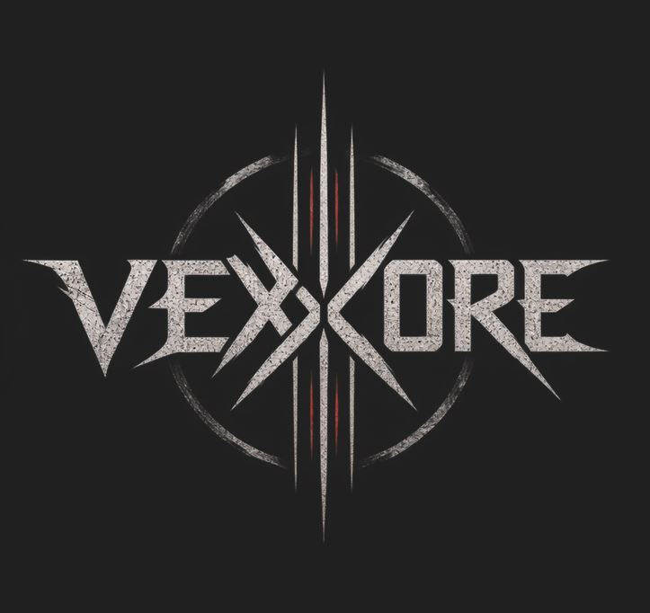

Rock / Metal / Humor
Liver Dumpling
Loud, unpredictable and unapologetically weird. Rock and metal with a chaotic sense of humor.
Meet the band →Listen to the album ↗
From chaotic rock and metal to crushing metalcore and deeply personal acoustic sounds.
Three distinct identities. One home for independent music.
Loud, unpredictable and unapologetically weird. Rock and metal with a chaotic sense of humor.
Meet the band →Listen to the album ↗
Dark, aggressive and uncompromising. Modern metalcore with crushing breakdowns and intense atmospheres.
Pre-save the album ↗Honest, melancholic and personal. Songs about life, loss, change and everything in between.
Listen to full album ↗Explore music from across the label.
Listen on your favorite streaming service.
Choose a streaming service ↗Listen to the full album or explore individual tracks.
Watch full album ↗Dumpling Records is an independent digital music label bringing together Liver Dumpling, VEXCORE and The Kalk. Each project has its own sound and identity, united by a love of creating music without boundaries.
Find new music, videos and announcements on our official channels.